PÃES CASEIROS
Ver pães
Doce + Sal e Cebola
Produção nos finais de semana ou por encomenda.
Escolha pães, biscoitos, casadinhos e esfirras em um cardápio leve, bonito e rápido. Monte seu pedido e envie tudo organizado pelo WhatsApp.
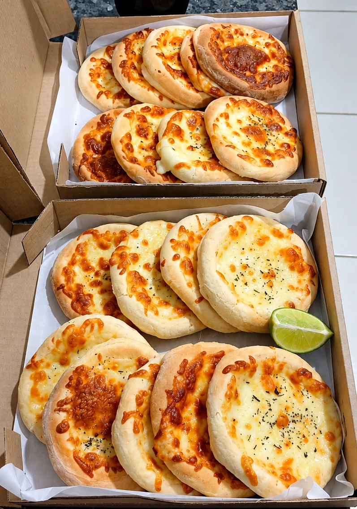
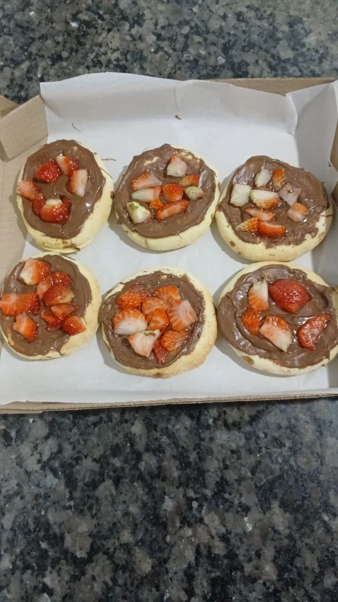
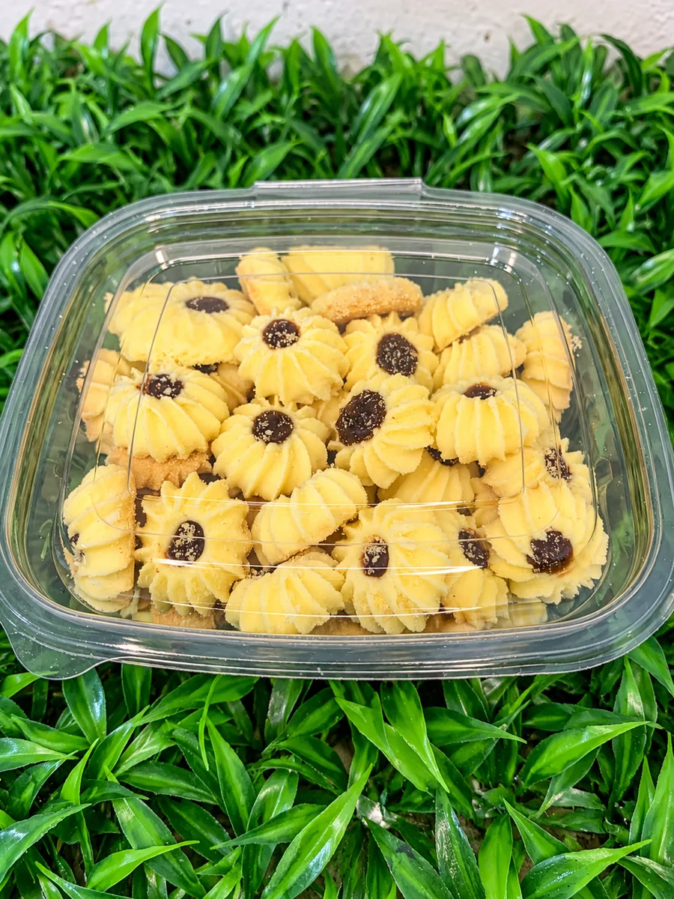
Veja a disponibilidade atualizada para evitar pedidos fora do dia ou horário. O site bloqueia pedidos diretos quando o produto não está disponível.
Horário de Brasília · atualiza automaticamente.
Produção nos finais de semana ou por encomenda.
Disponíveis das 18h30 às 22h nos três dias.
Pedido direto somente dentro da disponibilidade indicada. Encomendas de pães são solicitações separadas e dependem de confirmação do atendimento.
Amanteigados, pães e casadinhos feitos para o café, o lanche e os momentos de compartilhar.
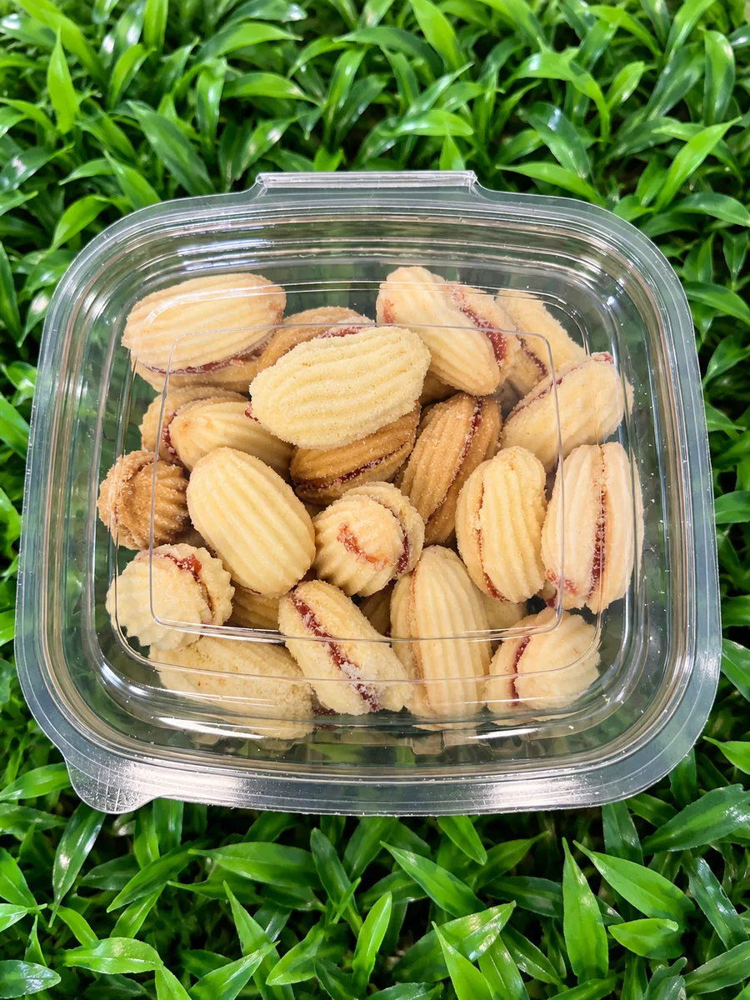
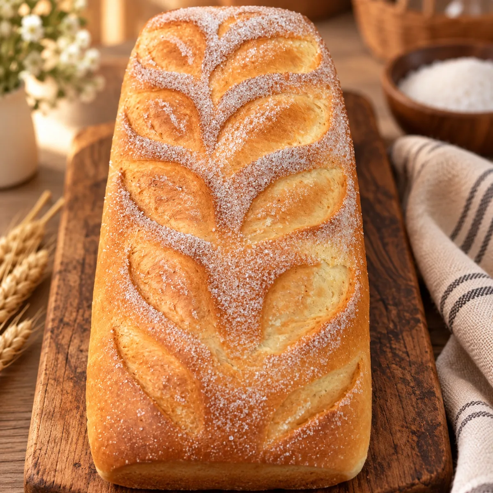
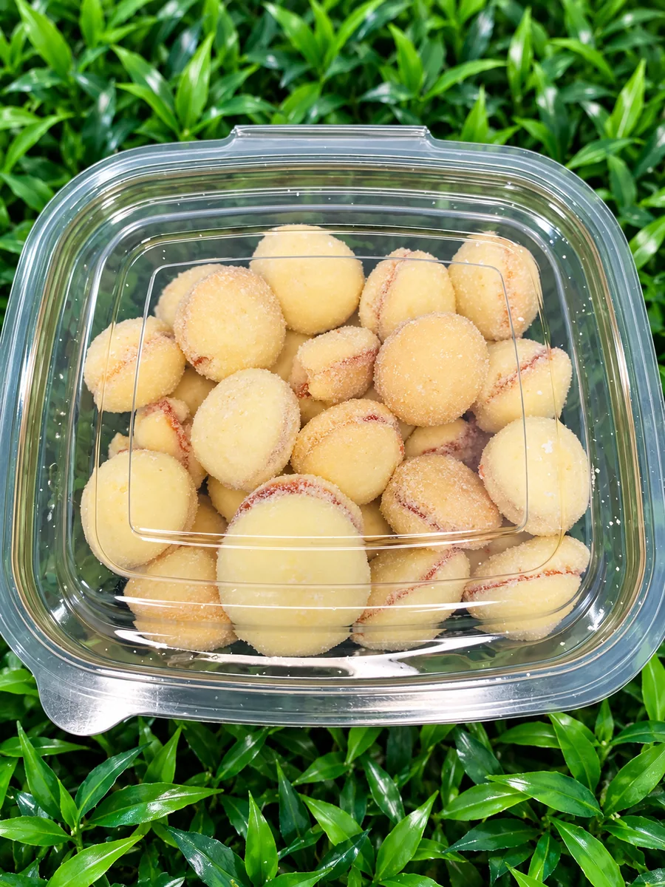
Escolha entre 6, 12, 15 ou 18 unidades. Pedidos de quinta a sábado, das 18h30 às 22h (horário de Brasília). Fora desse período, o cardápio informa a próxima abertura.
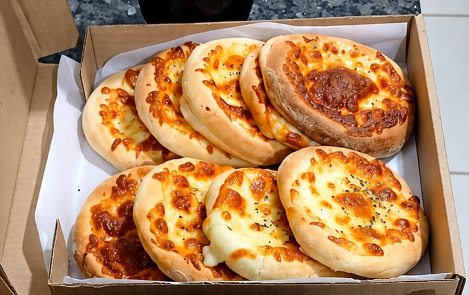
6 un.Uma bandeja com 6 esfirras abertas.
R$ 34,0012 esfirras abertas para dividir.
R$ 62,00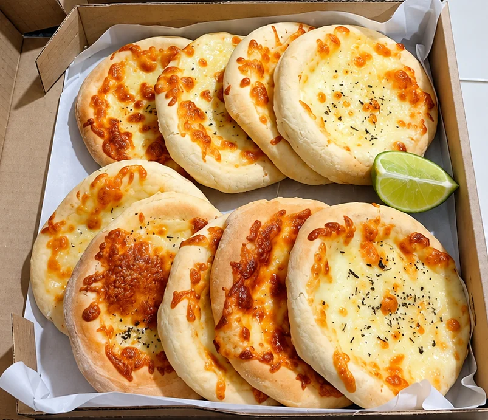
15 un.15 esfirras abertas para a mesa.
R$ 75,0018 esfirras abertas para compartilhar.
R$ 88,00Valores definitivos: iguais para pedidos pelo site e venda direta. O carrinho calcula automaticamente a opção escolhida.
Escolha o sabor que combina com o momento. A opção Mista entra junto dos combos salgados.
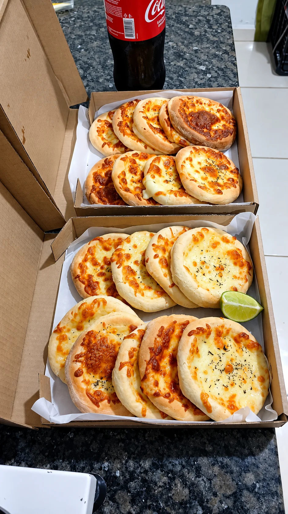
Veja as bandejas na apresentação. Quantidade, sabores e disponibilidade estão detalhados em cada opção do cardápio.
Imagem de apresentação das bandejas; a composição varia conforme o pedido.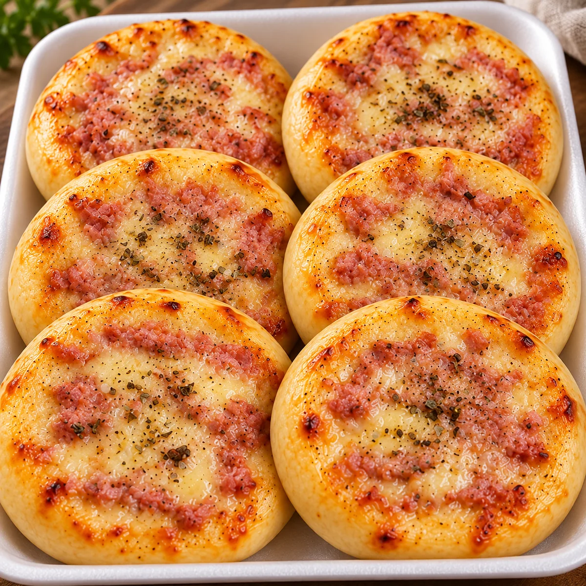
01Esfirra aberta de queijo com presunto.
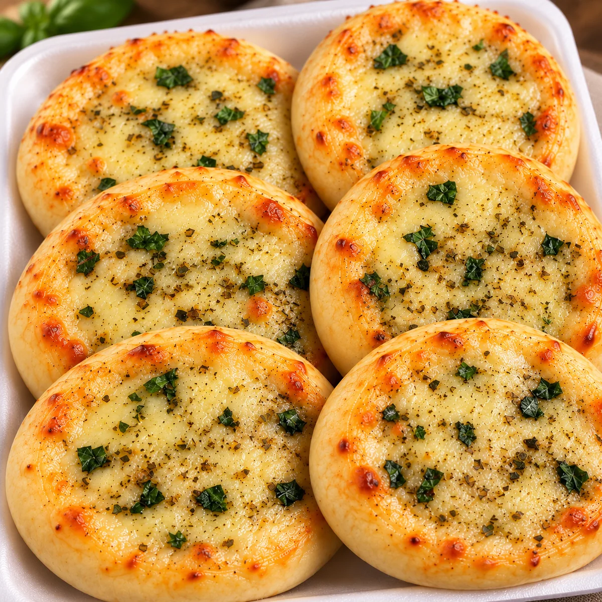
02Esfirra aberta de queijo com manjericão.
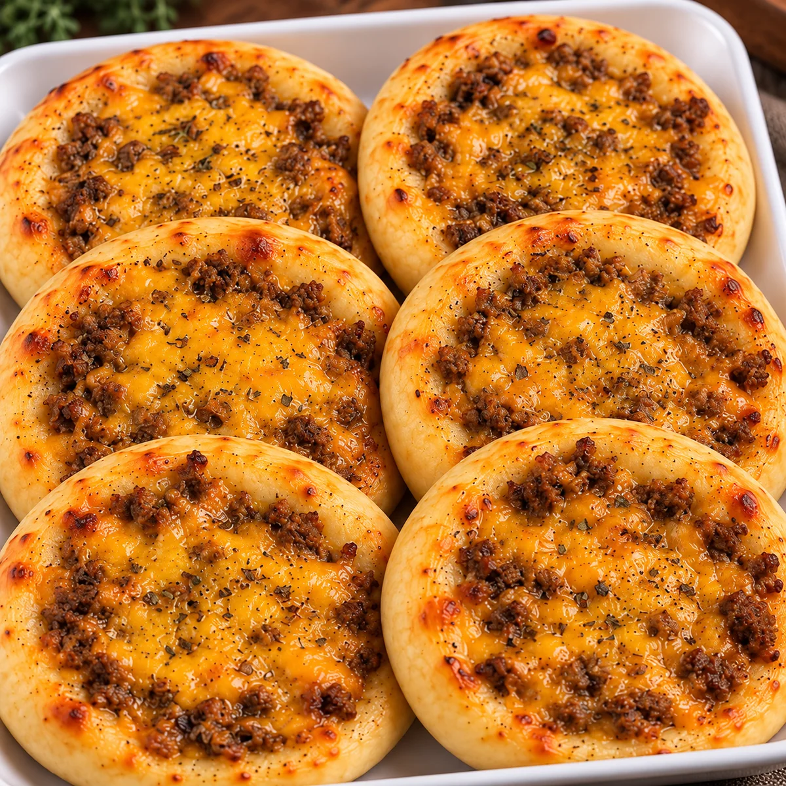
03Esfirra aberta de carne temperada com cheddar.
Opção mista para quem quer variar o sabor no pedido.
Chocolate, fruta e massa macia em opções que deixam o cardápio ainda mais completo. Quantidade por opção é confirmada com o Ju.
Use a busca ou os filtros. O carrinho continua salvo mesmo se você atualizar a página.
Complete seu pedido com Coca-Cola 1,5L e envie tudo junto pelo WhatsApp.
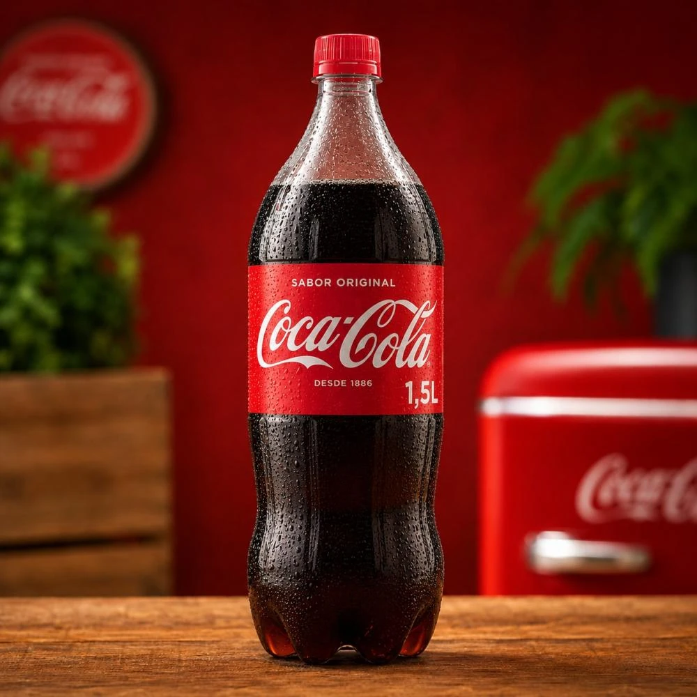
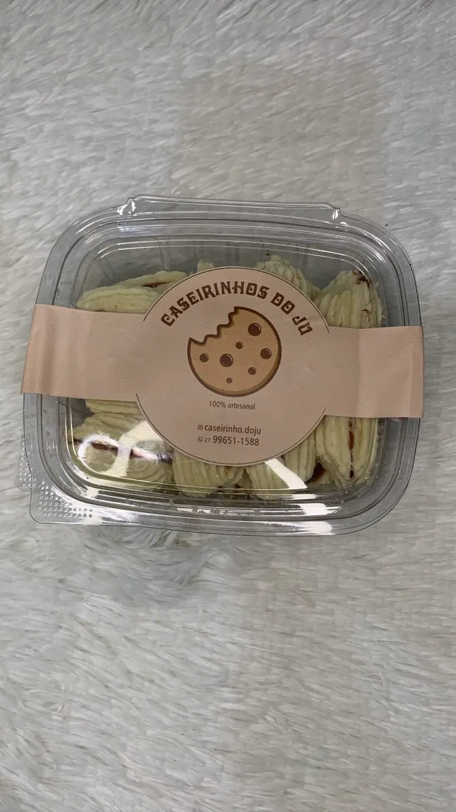
O Ju é o Juninho! Do biscoito amanteigado ao pão caseiro, ele reúne opções para o café, o lanche e momentos de compartilhar. Escolha o que deseja e mande o pedido direto para o atendimento.
Veja fotos, opções, pesos, sabores e valores no próprio cardápio.
Altere quantidades e confira o total no carrinho antes de continuar.
Preencha seus dados e o site monta uma mensagem completa para confirmação.
O site organiza o pedido; disponibilidade e entrega são confirmadas pelo atendimento.
Não. O site prepara a mensagem e o atendimento confirma disponibilidade, retirada ou entrega pelo WhatsApp.
As esfirras recebem pedidos diretos de quinta a sábado, das 18h30 às 22h (horário de Brasília). Fora desse período, a opção de adicionar ao pedido fica indisponível.
Pedidos diretos dos pães doce e de sal e cebola ficam disponíveis aos sábados e domingos. Em outros dias, você pode solicitar uma encomenda pelo WhatsApp para confirmação.
Esfirras salgadas: Queijo e Presunto, Queijo e Manjericão, Carne Temperada com Cheddar e Mista. Opções doces: Nutella com Morango, Banana com Bacon e Romeu e Julieta. Confirme a quantidade das opções doces com o Ju.
Os amanteigados e casadinhos embalados têm validade informada de 60 dias. Observe também a data e as orientações na embalagem.
Sim. O carrinho é salvo neste navegador para você continuar escolhendo mesmo depois de atualizar a página.